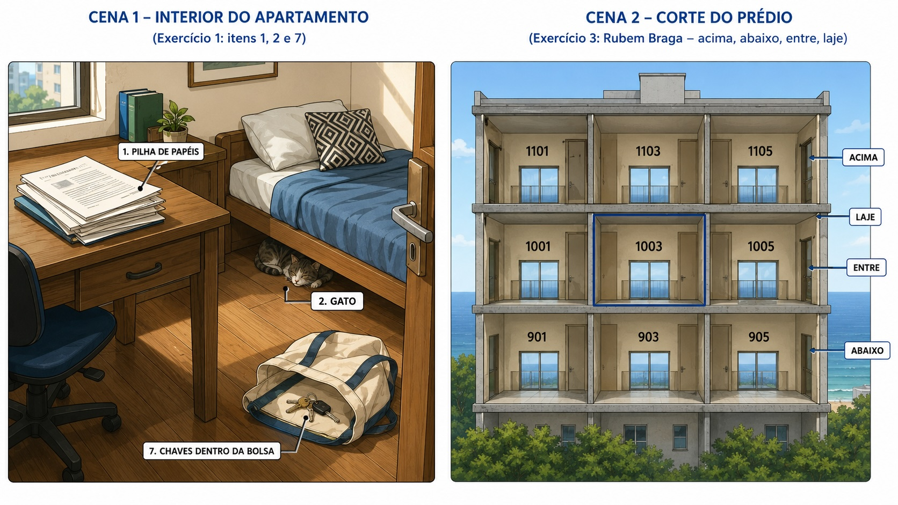

Use esta imagem como referência para os Exercícios 1 e 2.
1
Complete com a preposição correta
Gap fill · Autochecagem
Look at the street photo above. Fill in each blank with the correct preposition or prepositional phrase. Don't forget contractions: de + o = do, de + a = da.
-
1. A farmácia fica banco.
-
2. O táxi parou hotel.
-
3. A academia fica escola.
-
4. O apartamento é metrô — só cinco minutos a pé.
2
Escolha a preposição semanticamente correta
Múltipla escolha · Autochecagem
Click the best option. Think about the anchor — what is the reference point in each sentence?
1. O notebook está _____ mochila. Preciso pegar antes de sair.
2. O apartamento 1103 fica _____ o apartamento 1003. O barulho sobe.
3. A reunião é no hotel _____ o aeroporto — dá para ir a pé da chegada.
4. Tem um vazamento. A água está escorrendo _____ teto — vem lá de cima.
5. Eu moro _____ os apartamentos 801 e 805 — o meu número é 803.
6. Os arquivos mais importantes ficam _____ pasta "Contratos" — não na pasta principal.

Use esta imagem como referência para os Exercícios 3 e 4.
3
Complete com a preposição correta
Gap fill · Autochecagem
Look at the apartment photo above. Fill in each blank with the correct preposition or prepositional phrase. Don't forget contractions: de + o = do, de + a = da.
-
1. Os documentos estão mesa.
-
2. O gato está dormindo cama.
-
3. O apartamento 1003 fica 1001 e o 1005.
-
4. As chaves estão bolsa.
4
Verdadeiro ou Falso?
V / F · Autochecagem
Based on the Rubem Braga text, decide if each statement is true (Verdadeiro) or false (Falso). If false, you'll see the correction.
1. O apartamento 903 fica acima do apartamento 1003.
✏️ O apartamento 903 fica abaixo do 1003 — o narrador está no décimo andar, o senhor 903 está no nono.
2. O oceano Atlântico serve de "fronteira" ao sul do apartamento 1003.
3. O apartamento 1001 está à direita do apartamento 1003 — a leste.
✏️ O 1001 está a oeste — não a leste. O 1005 é que está a leste do 1003.
4. Entre os dois andares existe apenas uma laje fina.
5. O teto do apartamento 903 e o chão do apartamento 1003 são coisas diferentes.
✏️ No texto, o narrador diz que são a mesma coisa — a laje que é o chão do 1003 também é o teto do 903.
5
Produção escrita — descreva o seu espaço
Resposta aberta